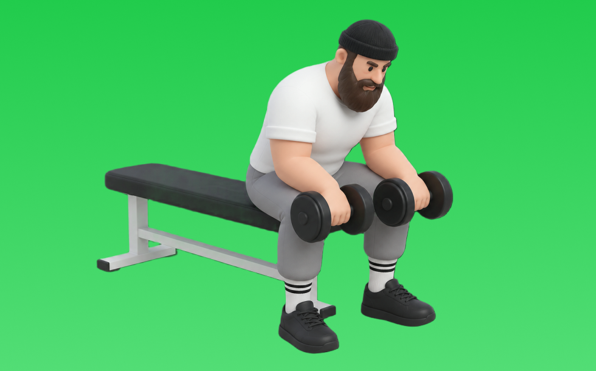

リバースリストカール

リバースリストカールとは、バーベルを使って「膝を曲げる」動作で前腕（前腕筋群）を鍛える種目です。高重量を扱いやすく、筋力を伸ばしやすいのが特徴で、かかとを引き寄せて収縮し、ゆっくり戻す動作を繰り返します。握力向上や前腕の発達が期待できます。
- 対象部位
- 腕
- 器具
- バーベル
- 記録形式
- 重量・回数
- 別名
- 手首リバース
YouTube動画
-
【リストカール】手首を痛めず前腕に効かせるコツ〜重さ・回数・頻度まで解説！
-
【初心者】ダンベル・リバースカールのやり方 | 極太の前腕をつくる腕トレ種目【ビーレジェンド プロテイン】
-
リバースリストカール（ダンベル）【糸井トレーナー】
-
リストカールは何回が適切？ 前腕太くしたいなら●●回やって【山岸秀匡の極意/筋トレ/切り抜き】
-
【極太】前腕が成長しない人の共通点&その対策種目３選【筋トレ】
-
【リストカール】前腕トレを6ヶ月ほぼ毎日やった結果と感じた事【リバースリストカール】
-
【ダンベルトレーニング】 前腕の鍛え方 (リバース)リストカール
-
リバースリストカール
-
【前腕・上腕筋トレ】リバースカールの正しいフォーム・やり方をご紹介 | 前腕・上腕筋を狙ったモテ腕を作るトレーニング！
-
【筋トレ】リバース・リストカールのトレーニング方法
-
【ケーブルトレーニング】 前腕の鍛え方 ケーブル(リバース)リストカール
-
【筋トレ】リストカール
-
【バーベルトレーニング】 前腕の鍛え方 バーベル(リバース)リストカール
-
【初心者向け】ダンベルを使った前腕の筋トレ【5分間】
-
【たった１分】前腕を極太にするリバースカール徹底解説
-
【前腕】リストカールを2ヶ月ほぼ毎日やってみた【屈筋群】
-
【筋トレ】太くたくましい腕になるリストカールの拮抗筋を鍛える為、バーベルリバースリストカールしてみた‼️
-
【筋トレ】リストカール 解説講座 【フォーム】【初心者】
-
前腕がゴツくならない人必見!？かっこいい前腕を作るための最強3種目
-
【リストカール】前腕トレを7ヶ月ほぼ毎日やった結果【リバースリストカール】
-
リバースリストカールのやり方 前腕（伸筋）を鍛える！ - 筋トレ講座
-
【男の象徴】寺島遼が”極太の前腕”を作る最強トレーニングを解説します。
-
Tシャツを着ると腕が細く見える〜前腕編〜
-
10分でできる前腕を極太にする最強トレーニング！！
YouTubeショート
-
【腕トレ/三頭筋】リバースリストカール、実践編【山岸秀匡】
-
5kgのダンベルで自宅で5分！バキバキの前腕を作る筋トレ！#shorts #筋トレ #fitness
-
リバースリストカール
-
ビハインドバックリストカール（Behind Back Wrist Curl）のやり方とフォーム
-
【筋トレ】リバースリストカール
-
確実に前腕を太くするリストカールの方法！#筋トレ #shorts #fitness
-
前腕が太くなる魔法のルーティン
-
【筋トレ動画図鑑】リバースリストカール - 筋肉研究所
-
前腕屈筋群を鍛える！リストカール(ダンベル･EZバー)【糸井トレーナー】
-
リストカール（Wrist Curl）のやり方とフォーム
-
リバース・リストカール
-
リバースカール（Reverse Curl）の基本フォームとやり方
-
リストカール／前腕屈筋群／筋トレ実践講座
-
ケーブルリバースカール（Cable Reverse Curl）のやり方とフォーム
-
リバースリストカール13kg
-
筋トレバッグ｜リバースリストカール（前腕）｜トレーニング8
-
【MUSTER】リバースバーベルリストカール
-
【THAT'Sトレーニング】リバース・ケーブルカール
動作方法
- 対象部位の力を抜かずに構える
- 反動を使わず、可動域を丁寧に使う
- 戻し動作をゆっくり行う
動作ポイント
- 可動域を急に狭めない
- 対象部位の緊張を保つ
ワンポイントアドバイス
- 肘の位置を固定すると狙った部位に効きやすい
- 回数を急がず、下ろし動作を丁寧に行う
目的別回数設定
目的や体力に応じた一般的な目安です。無理のない範囲で調整してください。
- 筋力アップ
- 1〜5回
- 筋肥大
- 6〜12回
- 持久力アップ
- 13〜20回
YouTube動画について
動画はYouTubeの公開情報をもとに表示しています。内容は投稿者によるもので、Biggrによる監修ではありません。
アプリを入手
筋トレやトレーニングの記録はBiggrにお任せください。今すぐ無料で使い始められます。